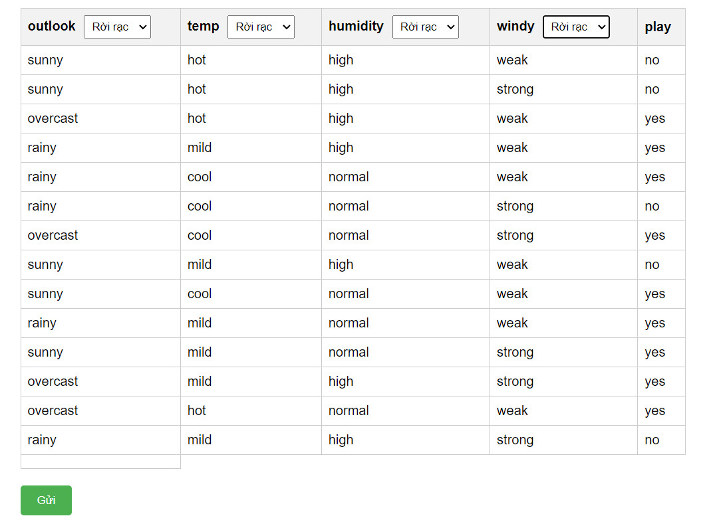
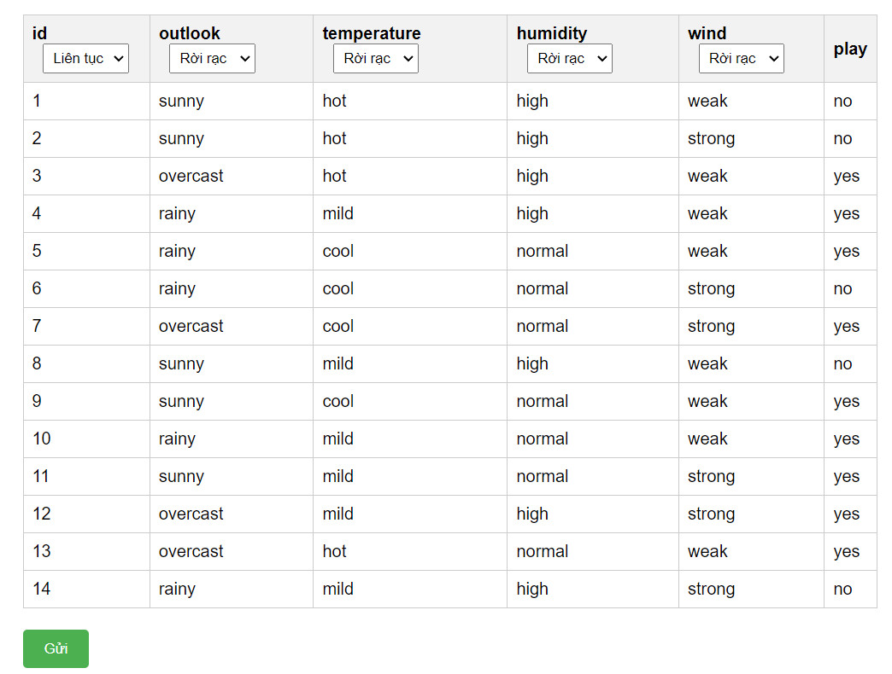
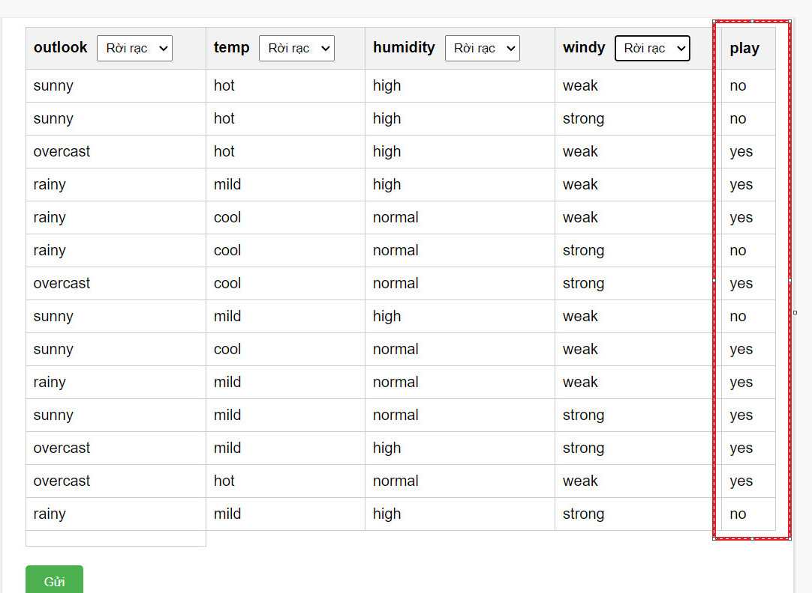
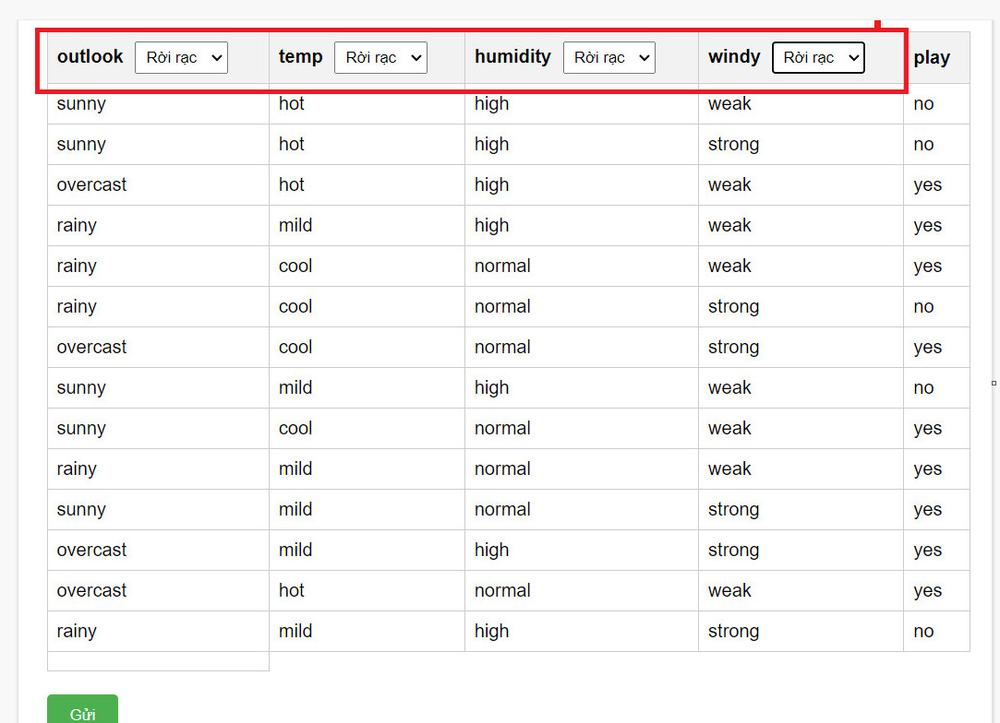
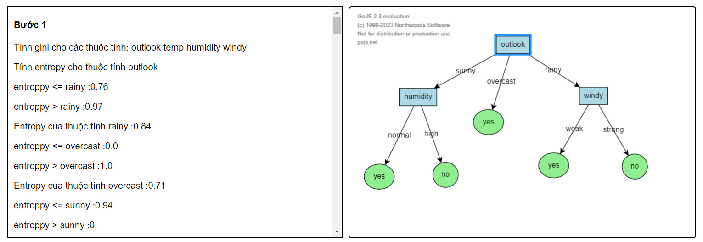

#Một số quy ước khi vẽ cây quyết định
1. Quy ước tập dữ liệu
- - Tập dữ liệu không chứa cột dữ liệu không mang tính chất quan trọng (id, số thứ tự,....)
- - Cột nhãn luôn là cột cuối cùng.
- - Dữ liệu của tập dữ liệu không chứa các trường rỗng.
- - Cần xác định kiểu dữ liệu cho từng thuộc tính.

Hình 1. Ảnh minh họa tập dữ liệu hợp lệ.

Hình 2. Ảnh minh họa tập dữ liệu không hợp lệ.

Hình 2. Ảnh minh họa tập dữ liệu phải có nhãn là cột cuối
cùng.

Hình 2. Ảnh minh họa tập dữ liệu phải có kiểu dữ liệu cho từng
cột.

Hình 2. Ảnh minh họa kết quả.
Phần bên trái
Mô tả chi tiết các bước thực hiện
Phần bên phải
Hiển thi cây được sinh ra từ bản mô tả các bước thực hiện bên trái